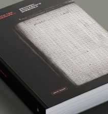
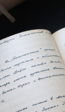
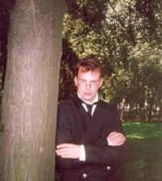
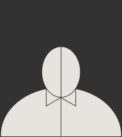
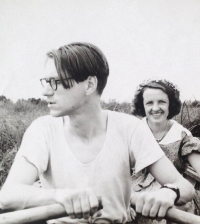

Центр «Прожито» собирает, описывает и публикует документы личного происхождения и разрабатывает исследовательские инструменты для работы с ними. Материалы публикуются и описываются силами участников-волонтёров, к сообществу которых может присоединиться каждый.
Передать документы
Передайте в «Прожито» копии документов из семейного архива, чтобы сделать их доступнее исследователям и читателям
Стать волонтёром
Вы можете помочь нашему делу — для работы с документами нужен компьютер и несколько свободных часов в неделю
Дневники и воспоминания
Мы собрали тексты опубликованных дневников и воспоминаний и сделали по ним расширенный поиск
Работа с архивом
Как устроен наш архив и поиск по сохранённым документам
Новости и события
Свежее
-

21.01.2022
Спецпроект
В издательстве Европейского университета в Санкт-Петербурге вышла первая книга из серии «Библиотека Прожито. Блокада»
-
16.04.2021
Спецпроект

Центр изучения эго-документов «Прожито» проведёт исследовательскую лабораторию, посвящённую работе с дембельскими альбомами
-

15.08.2021
Спецпроект
4 октября на фестивале «Тверской переплёт» выступит Михаил Мельниченко — историк, директор Центра «Прожито» ЕУСПб
Новости и события
-
В издательстве Европейского университета в Санкт-Петербурге вышла первая книга из серии «Библиотека Прожито. Блокада»
27.01.2022
Спецпроект
-
Центр изучения эго-документов «Прожито» проведёт исследовательскую лабораторию, посвящённую работе с дембельскими альбомами
16.04.2021
-
4 октября на фестивале «Тверской переплёт» выступит Михаил Мельниченко — историк, директор Центра «Прожито» ЕУСПб
15.08.2021
Лекция
Материалы
-
Нужен наборщик
Артамонов Виктор
Петербургский краевед и педагог. Нам необходимо набрать 20 рукописных тетрадей
-
Нужна сверка
Анонимный блокадный дневник
Музей Ахматовой передал нам для работы рукопись анонимного преподавателя ФЗУ, ставшего свидетелем блокады Ленинграда
-
Новые материалы
Родоман Борис
Документы из домашнего архива географа: переписка, дневники и материалы для его научных статей
Журнал «Прожито»
Новые материалы
-
Галина Зеленина о дневниках Леонида Липкина

историк, доцент кафедры теологии иудаизма, библеистики и иудаики РГГУ и ст. н. с. ШАГИ РАНХиГС
ОПЫТ ЧИТАТЕЛЯ
-
Тематическая подборка
Сталин умер.
Что теперь будет?! Как нам жить без него?
Все газеты впервые опубликовали портреты т.Сталина и многочисленные статьи. В них т.Сталин именуется вождём мирового пролетариата.
-
Спецпроект
Блокада
Исследование блокадных дневников
В условиях катастрофического голода, холода, вражеских бомбардировок и обстрелов сотни тысяч людей оказались заперты в городе. У многих из них был доступ к бумаге и чернилам, и некоторые начали вести дневники.
Журнал «Прожито»
Галина Зеленина о дневниках Леонида Липкина
историк, доцент кафедры теологии иудаизма, библеистики и иудаики РГГУ и ст. н. с. ШАГИ РАНХиГС
ОПЫТ ЧИТАТЕЛЯ
Спецпроекты
«Прожито» в Перми
Проект осуществляет поиск и копирование документов в пермских государственных и семейных архивах для того, чтобы собрать цифровую народную коллекцию документов по истории города и края
13 декабря 2021
Блокада
В условиях катастрофического голода, холода, вражеских бомбардировок и обстрелов сотни тысяч людей оказались заперты в городе. У многих из них был доступ к бумаге и чернилам, и некоторые начали вести дневники.
13 декабря 2021